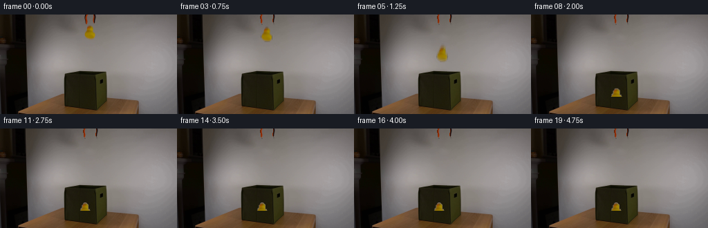
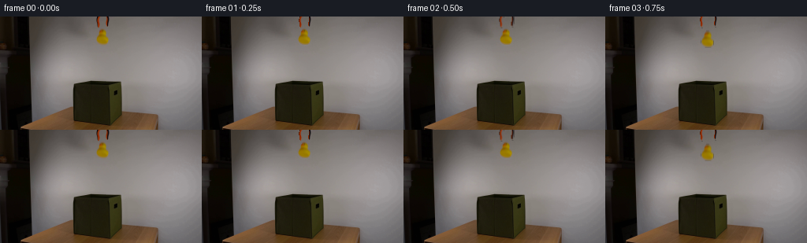

CODING AGENTS AS PIXEL WORLD MODELS
traex/DeepSeek-V4.1-Flash · 0060
点击播放 · 原生 RGB 像素
逐轮保存的候选
回放视频、检查图与代码变化。
每份候选均可单独播放。实际图片检查记录在下方工具轨迹中。
候选 01播放与检查图
点击播放 · 原生 RGB 像素


展开代码变化
--- 上一保存版本
+++ 本次保存版本
@@ -0,0 +1,274 @@
+from pathlib import Path
+
+import cv2
+import numpy as np
+from PIL import Image
+
+import artifact_io
+
+
+CASE_DIR = Path(__file__).resolve().parent
+WIDTH, HEIGHT = 256, 144
+FRAME_COUNT = 20
+FPS = 4
+
+# Release timing in seconds. The fall is short, then the duck settles and rests.
+JAW_OPEN_START = 0.25
+FALL_START = 0.50
+FALL_END = 1.75
+SETTLE_END = 2.25
+FINAL_DX = -6.5
+FINAL_DY = 92.0
+
+
+def _largest_component(mask: np.ndarray) -> np.ndarray:
+ count, labels, stats, _ = cv2.connectedComponentsWithStats(mask.astype(np.uint8))
+ if count <= 1:
+ return np.zeros_like(mask, dtype=np.uint8)
+ index = 1 + int(np.argmax(stats[1:, cv2.CC_STAT_AREA]))
+ return (labels == index).astype(np.uint8)
+
+
+def _filled_component(mask: np.ndarray) -> np.ndarray:
+ component = _largest_component(mask)
+ component = cv2.morphologyEx(component, cv2.MORPH_CLOSE, np.ones((3, 3), np.uint8))
+ contours, _ = cv2.findContours(component, cv2.RETR_EXTERNAL, cv2.CHAIN_APPROX_SIMPLE)
+ filled = np.zeros_like(component)
+ if contours:
+ cv2.drawContours(filled, contours, -1, 1, cv2.FILLED)
+ return filled
+
+
+def _duck_mask(image: np.ndarray) -> np.ndarray:
+ hsv = cv2.cvtColor(image, cv2.COLOR_RGB2HSV)
+ hue, saturation, value = cv2.split(hsv)
+ candidate = (
+ (hue >= 8)
+ & (hue <= 65)
+ & (saturation >= 45)
+ & (value >= 25)
+ ).astype(np.uint8)
+ candidate[:14] = 0
+ candidate[39:] = 0
+ candidate[:, :117] = 0
+ candidate[:, 143:] = 0
+ return _filled_component(candidate)
+
+
+def _jaw_masks(image: np.ndarray) -> tuple[np.ndarray, np.ndarray]:
+ hsv = cv2.cvtColor(image, cv2.COLOR_RGB2HSV)
+ hue, saturation, value = cv2.split(hsv)
+ colored = (
+ (((hue < 22) | (hue > 170)) & (saturation > 65) & (value > 45))
+ ).astype(np.uint8)
+ dark = (value < 78).astype(np.uint8)
+
+ yy, xx = np.indices((HEIGHT, WIDTH))
+ left_roi = ((xx >= 120) & (xx <= 129) & (yy < 16)).astype(np.uint8)
+ right_roi = ((xx >= 131) & (xx <= 140) & (yy < 16)).astype(np.uint8)
+
+ left = _largest_component(((colored | dark) & left_roi).astype(np.uint8))
+ right = _largest_component(((colored | dark) & right_roi).astype(np.uint8))
+ left = cv2.morphologyEx(left, cv2.MORPH_CLOSE, np.ones((2, 2), np.uint8))
+ right = cv2.morphologyEx(right, cv2.MORPH_CLOSE, np.ones((2, 2), np.uint8))
+ return left, right
+
+
+def _crop_layer(image: np.ndarray, mask: np.ndarray) -> dict:
+ ys, xs = np.where(mask > 0)
+ x0, x1 = int(xs.min()), int(xs.max()) + 1
+ y0, y1 = int(ys.min()), int(ys.max()) + 1
+ rgb = image[y0:y1, x0:x1].copy()
+ alpha = mask[y0:y1, x0:x1].astype(np.float32)
+ return {
+ "rgb": rgb.astype(np.float32),
+ "alpha": alpha,
+ "x0": x0,
+ "y0": y0,
+ "w": x1 - x0,
+ "h": y1 - y0,
+ }
+
+
+def _affine_for_layer(
+ layer: dict,
+ dx: float,
+ dy: float,
+ angle: float = 0.0,
+ scale_x: float = 1.0,
+ scale_y: float = 1.0,
+) -> np.ndarray:
+ source_center = (layer["w"] * 0.5, layer["h"] * 0.5)
+ target_center = (
+ layer["x0"] + layer["w"] * 0.5 + dx,
+ layer["y0"] + layer["h"] * 0.5 + dy,
+ )
+ matrix = cv2.getRotationMatrix2D(source_center, angle, 1.0)
+ matrix[0, 0] *= scale_x
+ matrix[0, 1] *= scale_x
+ matrix[1, 0] *= scale_y
+ matrix[1, 1] *= scale_y
+ matrix[0, 2] += target_center[0] - source_center[0]
+ matrix[1, 2] += target_center[1] - source_center[1]
+ return matrix
+
+
+def _warp_layer(layer: dict, matrix: np.ndarray) -> tuple[np.ndarray, np.ndarray]:
+ rgb = cv2.warpAffine(
+ layer["rgb"],
+ matrix,
+ (WIDTH, HEIGHT),
+ flags=cv2.INTER_LINEAR,
+ borderMode=cv2.BORDER_CONSTANT,
+ borderValue=0,
+ )
+ alpha = cv2.warpAffine(
+ layer["alpha"],
+ matrix,
+ (WIDTH, HEIGHT),
+ flags=cv2.INTER_LINEAR,
+ borderMode=cv2.BORDER_CONSTANT,
+ borderValue=0,
+ )
+ return rgb, np.clip(alpha, 0.0, 1.0)
+
+
+def _composite_layers(
+ base: np.ndarray,
+ layers: list[tuple[dict, np.ndarray, float]],
+) -> np.ndarray:
+ result = base.astype(np.float32)
+ for layer, matrix, weight in layers:
+ rgb, alpha = _warp_layer(layer, matrix)
+ if weight < 1.0:
+ alpha *= weight
+ result = result * (1.0 - alpha[..., None]) + rgb * alpha[..., None]
+ return result
+
+
+def _composite_exposure(
+ base: np.ndarray,
+ layer: dict,
+ transforms: list[tuple[np.ndarray, float]],
+) -> np.ndarray:
+ """Composite a short-exposure sample without brightening translucent edges."""
+ accumulated_rgb = np.zeros((HEIGHT, WIDTH, 3), dtype=np.float32)
+ accumulated_alpha = np.zeros((HEIGHT, WIDTH), dtype=np.float32)
+ for matrix, weight in transforms:
+ rgb, alpha = _warp_layer(layer, matrix)
+ accumulated_rgb += rgb * alpha[..., None] * weight
+ accumulated_alpha += alpha * weight
+
+ safe_alpha = np.maximum(accumulated_alpha, 1e-6)
+ rgb = accumulated_rgb / safe_alpha[..., None]
+ alpha = np.clip(accumulated_alpha, 0.0, 1.0)
+ result = base.astype(np.float32)
+ result = result * (1.0 - alpha[..., None]) + rgb * alpha[..., None]
+ return result
+
+
+def _smoothstep(edge0: float, edge1: float, value: float) -> float:
+ x = np.clip((value - edge0) / (edge1 - edge0), 0.0, 1.0)
+ return float(x * x * (3.0 - 2.0 * x))
+
+
+def _duck_state(time_s: float) -> tuple[float, float, float, float, float]:
+ if time_s <= FALL_START:
+ return 0.0, 0.0, 0.0, 1.0, 1.0
+
+ if time_s < FALL_END:
+ u = (time_s - FALL_START) / (FALL_END - FALL_START)
+ u2 = u * u
+ dx = FINAL_DX * u2
+ dy = FINAL_DY * u2
+ angle = -2.8 * np.sin(np.pi * u)
+ scale = 1.0 - 0.04 * u2
+ return float(dx), float(dy), float(angle), float(scale), float(scale)
+
+ # A single soft compression and rebound at the fabric opening.
+ if time_s < FALL_END + 0.125:
+ return FINAL_DX, FINAL_DY - 1.0, 0.0, 1.045, 0.915
+ if time_s < SETTLE_END:
+ return FINAL_DX, FINAL_DY - 0.5, 0.0, 1.015, 0.965
+ return FINAL_DX, FINAL_DY, 0.0, 0.96, 0.96
+
+
+def _jaw_offset(time_s: float) -> float:
+ return 3.0 * _smoothstep(JAW_OPEN_START, 0.75, time_s)
+
+
+def _foreground_rim(image: np.ndarray) -> tuple[np.ndarray, np.ndarray]:
+ mask = np.zeros((HEIGHT, WIDTH), dtype=np.float32)
+ mask[119:144, 89:158] = 1.0
+ return image.astype(np.float32), mask
+
+
+def generate_frames() -> np.ndarray:
+ source = np.asarray(Image.open(CASE_DIR / "first_frame.png").convert("RGB"))
+ if source.shape != (HEIGHT, WIDTH, 3):
+ raise ValueError(f"Unexpected first frame shape: {source.shape}")
+
+ duck_mask = _duck_mask(source)
+ left_jaw_mask, right_jaw_mask = _jaw_masks(source)
+ object_mask = cv2.bitwise_or(duck_mask, cv2.bitwise_or(left_jaw_mask, right_jaw_mask))
+ cleanup_mask = cv2.dilate(
+ object_mask,
+ cv2.getStructuringElement(cv2.MORPH_ELLIPSE, (3, 3)),
+ iterations=2,
+ )
+ clean_background = cv2.inpaint(source, cleanup_mask, 4, cv2.INPAINT_TELEA)
+
+ duck = _crop_layer(source, duck_mask)
+ left_jaw = _crop_layer(source, left_jaw_mask)
+ right_jaw = _crop_layer(source, right_jaw_mask)
+ rim_rgb, rim_alpha = _foreground_rim(source)
+
+ frames = np.empty((FRAME_COUNT, HEIGHT, WIDTH, 3), dtype=np.uint8)
+ frames[0] = source
+
+ for index in range(1, FRAME_COUNT):
+ time_s = index / FPS
+ frame = clean_background.astype(np.float32)
+
+ jaw_offset = _jaw_offset(time_s)
+ left_matrix = _affine_for_layer(left_jaw, -jaw_offset, -0.25 * jaw_offset)
+ right_matrix = _affine_for_layer(right_jaw, jaw_offset, -0.25 * jaw_offset)
+ frame = _composite_layers(
+ frame,
+ [(left_jaw, left_matrix, 1.0), (right_jaw, right_matrix, 1.0)],
+ )
+
+ dx, dy, angle, scale_x, scale_y = _duck_state(time_s)
+ if FALL_START < time_s <= FALL_END:
+ sample_times = (time_s - 0.065, time_s - 0.032, time_s)
+ transforms = []
+ for sample_time, weight in zip(sample_times, (0.20, 0.30, 0.50)):
+ sdx, sdy, sangle, ssx, ssy = _duck_state(max(FALL_START, sample_time))
+ transforms.append(
+ (
+ _affine_for_layer(
+ duck, sdx, sdy, sangle, ssx, ssy
+ ),
+ weight,
+ )
+ )
+ frame = _composite_exposure(frame, duck, transforms)
+ else:
+ duck_matrix = _affine_for_layer(
+ duck, dx, dy, angle, scale_x, scale_y
+ )
+ frame = _composite_layers(frame, [(duck, duck_matrix, 1.0)])
+
+ frame = frame * (1.0 - rim_alpha[..., None]) + rim_rgb * rim_alpha[..., None]
+ frames[index] = np.clip(frame + 0.5, 0, 255).astype(np.uint8)
+
+ return frames
+
+
+def main() -> None:
+ frames = generate_frames()
+ artifact_io.save(frames, CASE_DIR)
+
+
+if __name__ == "__main__":
+ main()
可观测工具轨迹
实际执行的命令与返回图片。
命令 1exit 0
/bin/bash -c "pwd && rg --files -g '"'!*'"\\.git*' | sed -n '1,200p'"
命令 2exit 0
/bin/bash -c "sed -n '1,240p' prompt.txt"
命令 3exit 0
/bin/bash -c "sed -n '1,280p' GENERATION_RULES.md"
命令 4exit 0
/bin/bash -c "find . -maxdepth 2 -type f -printf '%p %s bytes\\n' | sort"
命令 5exit 0
/bin/bash -c "sed -n '1,260p' artifact_io.py"
命令 6exit 0
/bin/bash -c "sed -n '1,220p' player_template.html"
命令 7exit 0
/bin/bash -c "python - <<'PY'
from PIL import Image
import numpy as np
im=Image.open('first_frame.png')
print(im.mode, im.size)
a=np.asarray(im)
print(a.shape,a.dtype,a.min(),a.max(),a.mean((0,1)))
# unique colors count
print('unique',len(np.unique(a.reshape(-1,3),axis=0)))
# 16x9 block averages
h,w=a.shape[:2]
for y in range(0,h,16):
print(' '.join('%02x%02x%02x'%tuple(a[y:y+16,x:x+16].mean((0,1)).astype(np.uint8)) for x in range(0,w,16)))
PY"命令 8exit 0
/bin/bash -c "python - <<'PY' import importlib.util for m in ['cv2','scipy','skimage','imageio','matplotlib']: print(m, bool(importlib.util.find_spec(m))) PY"
命令 9exit 0
/bin/bash -c "python - <<'PY'
import cv2, numpy as np
im=cv2.imread('first_frame.png')
hsv=cv2.cvtColor(im,cv2.COLOR_BGR2HSV)
# print sample stats and masks
masks={
'yellow':((15,80,80),(40,255,255)),
'orange':((0,100,80),(18,255,255)),
'darkgreen':((30,40,10),(90,255,110)),
'black':((0,0,0),(180,255,55)),
'wood':((5,40,50),(30,255,220)),
}
for name,(lo,hi) in masks.items():
m=cv2.inRange(hsv,np.array(lo),np.array(hi))
n, lab, stats, cent=cv2.connectedComponentsWithStats(m)
comps=sorted(stats[1:],key=lambda x:x[4],reverse=True)[:10]
print('\\n',name,'total',m.sum()//255)
for x,y,w,h,a in comps:
if a>=5: print((x,y,w,h,a), 'mean',cv2.mean(im,mask=(lab==np.where((stats==[x,y,w,h,a]).all(axis=1))[0][0]).astype('uint8')) if False else '')
PY"命令 10exit 0
/bin/bash -c "python - <<'PY'
import cv2, numpy as np
from PIL import Image
im=cv2.imread('first_frame.png')
# nearest x4 and contours map for yellow/orange
for name,mask in [('yellow',cv2.inRange(cv2.cvtColor(im,cv2.COLOR_BGR2HSV),np.array([15,70,70]),np.array([45,255,255]))),('orange',cv2.inRange(cv2.cvtColor(im,cv2.COLOR_BGR2HSV),np.array([0,90,70]),np.array([20,255,255]))),('darkgreen',cv2.inRange(cv2.cvtColor(im,cv2.COLOR_BGR2HSV),np.array([30,30,5]),np.array([90,255,120]))),('black',cv2.inRange(cv2.cvtColor(im,cv2.COLOR_BGR2HSV),np.array([0,0,0]),np.array([180,255,50])))]:
Image.fromarray(mask).resize((1024,576),Image.Resampling.NEAREST).save('.tmp/mask_'+name+'.png')
# crop relevant object x2
for name,(x0,y0,x1,y1) in {'duck':(30,65,170,130),'grabber':(20,75,205,135),'full':(0,0,256,144)}.items():
Image.fromarray(cv2.cvtColor(im[y0:y1,x0:x1],cv2.COLOR_BGR2RGB)).resize(((x1-x0)*4,(y1-y0)*4),Image.Resampling.NEAREST).save('.tmp/crop_'+name+'.png')
PY"命令 11exit 0
/bin/bash -c "python - <<'PY'
from PIL import Image
import numpy as np, colorsys
im=np.asarray(Image.open('first_frame.png'))
# classify each 2x2 block: dominant semantic via HSV thresholds
import cv2
hsv=cv2.cvtColor(im,cv2.COLOR_RGB2HSV)
chars=' .:-=+*#%@'
print(' '+''.join(str((x//10)%10) for x in range(0,256,2)))
for y in range(0,144,2):
row=''
for x in range(0,256,2):
b=hsv[y:y+2,x:x+2].reshape(-1,3).mean(0)
h,s,v=b
if s>90 and 12<h<42 and v>65: c='Y' if h>=22 else 'O'
elif 25<h<100 and s>35 and v<120: c='G'
elif v<40: c='K'
elif s>30 and h<30 and v<170: c='w'
else: c=chars[min(9,int(v/256*10))]
row+=c
print(f'{y:3d}'+row)
PY"命令 12exit 0
/bin/bash -c "python - <<'PY'
from PIL import Image
import numpy as np
from sklearn.cluster import KMeans
im=np.asarray(Image.open('first_frame.png'))
h,w,_=im.shape
# kmeans 16 colors
X=im.reshape(-1,3)
km=KMeans(16,random_state=0,n_init=5).fit(X)
lab=km.labels_.reshape(h,w)
for i,c in enumerate(km.cluster_centers_):
ys,xs=np.where(lab==i)
print(i,tuple(np.round(c).astype(int)),len(xs),'bbox', (xs.min(),ys.min(),xs.max(),ys.max()),'centroid',tuple(np.round([xs.mean(),ys.mean()]).astype(int)))
# category exact-ish ranges
hsv=__import__('cv2').cvtColor(im,__import__('cv2').COLOR_RGB2HSV)
cats={
'yellow': ((18,100,80),(42,255,255)),
'orange':((0,110,80),(18,255,255)),
'green':((30,30,8),(90,255,110)),
'black':((0,0,0),(180,255,45)),
'white':((0,0,150),(180,40,255)),
'brown':((5,50,45),(25,255,190)),
}
for n,(lo,hi) in cats.items():
m=__import__('cv2').inRange(hsv,np.array(lo),np.array(hi))>0
ys,xs=np.where(m)
print(n,len(xs), (xs.min(),ys.min(),xs.max(),ys.max()) if len(xs) else None)
PY"命令 13exit 0
/bin/bash -c "python - <<'PY'
from PIL import Image
import numpy as np, cv2
im=np.asarray(Image.open('first_frame.png'))
hsv=cv2.cvtColor(im,cv2.COLOR_RGB2HSV)
# Build segmentation visualization full x4: category colors
out=np.zeros_like(im)
conditions=[
(((hsv[:,:,0]>=18)&(hsv[:,:,0]<=42)&(hsv[:,:,1]>=70)&(hsv[:,:,2]>=60)), (255,230,20)),
(((hsv[:,:,0]<=18)&(hsv[:,:,1]>=100)&(hsv[:,:,2]>=70)), (255,70,0)),
(((hsv[:,:,0]>=30)&(hsv[:,:,0]<=90)&(hsv[:,:,1]>=30)&(hsv[:,:,2]>=8)&(hsv[:,:,2]<=130)), (20,160,60)),
((hsv[:,:,2]<50), (0,0,0)),
(((hsv[:,:,1]>=30)&(hsv[:,:,0]<30)&(hsv[:,:,2]>=50)), (180,100,40)),
((hsv[:,:,1]<30)&(hsv[:,:,2]>=130), (220,220,220)),
]
for m,c in conditions: out[m]=c
Image.fromarray(out).resize((1024,576),Image.Resampling.NEAREST).save('.tmp/seg.png')
# Print every 4 px semantic chars
for y in range(0,144,4):
s=''
for x in range(0,256,4):
hs=hsv[y:y+4,x:x+4].reshape(-1,3)
# majority category
h,sat,v=hs.mean(0)
if sat>75 and 18<h<42 and v>60: c='Y'
elif sat>100 and h<=18 and v>70: c='O'
elif 30<h<90 and sat>30 and 8<v<130: c='G'
elif v<50:c='K'
elif sat>30 and h<30 and v>=50:c='w'
elif sat<30 and v>=130:c='W'
elif sat<20 and v>=80:c='s'
else:c='.'
s+=c
print(f'{y:3d} {s}')
PY"命令 14exit 0
/bin/bash -c "python - <<'PY'
from PIL import Image
import numpy as np
im=np.asarray(Image.open('first_frame.png'))
# Print row color runs with quantized nearest of palette for x ranges; simplify representative colors
from collections import Counter
# inspect selected bounding boxes mean/median and extremes
boxes={'duck':(42,78,155,130),'box':(88,80,152,143),'gripper':(24,110,205,143),'table':(20,110,205,143),'bg':(0,0,256,80)}
for n,(x0,y0,x1,y1) in boxes.items():
a=im[y0:y1,x0:x1].reshape(-1,3)
print(n,'mean',np.round(a.mean(0),1),'median',np.median(a,0),'p10',np.percentile(a,10,axis=0),'p90',np.percentile(a,90,axis=0))
# print color values grid at select x positions
for y in [80,84,88,92,96,100,104,108,112,116,120,124,128,132,136,140,143]:
print('y',y, ' '.join(f'{x}:{tuple(im[y,x])}' for x in range(20,211,20)))
PY"命令 15exit 0
/bin/bash -c "python - <<'PY'
from PIL import Image
import numpy as np, cv2
im=np.asarray(Image.open('first_frame.png'))
hsv=cv2.cvtColor(im,cv2.COLOR_RGB2HSV)
# grid x110..150 y0..50, character mapping saturation/colors
for y in range(0,52):
s=''
for x in range(108,153):
r,g,b=map(int,im[y,x]); h,sa,v=map(int,hsv[y,x])
if sa>130 and 10<=h<=35 and r>100: c='O'
elif sa>100 and 18<h<45 and v>80: c='Y'
elif v<45: c='K'
elif sa<20 and v<70:c='k'
elif sa<25 and v>180:c='W'
elif sa<35 and v>130:c='w'
elif sa<50 and v>80:c='s'
elif h<25 and sa>30:c='b'
else:c='.'
s+=c
print(f'{y:02d} {s}')
# exact unique mean in top center and rows
print('top center colors:')
for y in range(0,40,2):
print(y,[tuple(im[y,x]) for x in [118,120,122,124,126,128,130,132,134,136,138,140,142]])
PY"命令 16exit 0
/bin/bash -c "python - <<'PY'
from PIL import Image
import numpy as np, cv2
im=np.asarray(Image.open('first_frame.png'))
hsv=cv2.cvtColor(im,cv2.COLOR_RGB2HSV)
# bounding masks on lower region
sat=hsv[:,:,1]; val=hsv[:,:,2]; hue=hsv[:,:,0]
yellow=(hue>=18)&(hue<=45)&(sat>=90)&(val>=70)&(np.indices(hue.shape)[0]>70)&(np.indices(hue.shape)[1]>35)&(np.indices(hue.shape)[1]<170)
orange=(hue<=18)&(sat>=100)&(val>=70)&(np.indices(hue.shape)[0]>75)&(np.indices(hue.shape)[1]<220)
for name,m in [('yellow',yellow),('orange',orange)]:
n,lab,stats,cent=cv2.connectedComponentsWithStats(m.astype('uint8'))
print(name)
for i in np.argsort(stats[1:,4])[::-1][:20]+1:
x,y,w,h,a=stats[i]
print(i,(x,y,w,h,a),cent[i],tuple(np.round(im[lab==i].mean(0)).astype(int)))
# row runs for duck mask
for y in range(78,132):
xs=np.where(yellow[y])[0]
if len(xs):
# runs
b=np.r_[0,np.flatnonzero(np.diff(xs)>1)+1,len(xs)]
print(y,[(int(xs[a]),int(xs[b-1])) for a,b in zip(b[:-1],b[1:])])
PY"命令 17exit 0
/bin/bash -c "python - <<'PY'
from PIL import Image
import numpy as np
from sklearn.cluster import KMeans
im=np.asarray(Image.open('first_frame.png'))
x0,y0,x1,y1=70,72,180,144
crop=im[y0:y1,x0:x1]
for k in [8,12]:
km=KMeans(k,random_state=1,n_init=5).fit(crop.reshape(-1,3))
print('\\nk',k)
for i,c in enumerate(km.cluster_centers_):
m=km.labels_.reshape(crop.shape[:2])==i
ys,xs=np.where(m)
print(i,tuple(np.round(c).astype(int)),len(xs),'bbox',(xs.min()+x0,ys.min()+y0,xs.max()+x0,ys.max()+y0))
PY"命令 18exit 0
/bin/bash -c "python - <<'PY'
from PIL import Image
import numpy as np, cv2
im=np.asarray(Image.open('first_frame.png'))
hsv=cv2.cvtColor(im,cv2.COLOR_RGB2HSV)
# mask duck yellow broader
Y=(hsv[:,:,0]>=16)&(hsv[:,:,0]<=45)&(hsv[:,:,1]>=80)&(hsv[:,:,2]>=50)
Y[:75]=0;Y[:, :35]=0;Y[:,170:]=0
n,lab,stats,cent=cv2.connectedComponentsWithStats(Y.astype('uint8'))
for i in np.argsort(stats[1:,4])[::-1][:30]+1:
x,y,w,h,a=stats[i]
print(i,(x,y,w,h,a),cent[i],tuple(np.round(im[lab==i].mean(0)).astype(int)))
# object rows: all pixels likely duck from x35..165 y80..130 except grey background. print bbox extents per row based on yellow plus adjacent darker
for y in range(78,131):
xs=np.where(Y[y])[0]
if len(xs): print(y, xs.min(), xs.max(),len(xs))
PY"命令 19exit 0
/bin/bash -c "python - <<'PY'
from PIL import Image
import numpy as np
im=np.asarray(Image.open('first_frame.png'))
# inspect actual RGB matrix categories by x y region y80-132 x88-160, 2x downsample quantized names
# use nearest palette mapping of each pixel then print blocks as chars based color dominant nearest
pal=np.array([[30,28,14],[55,53,20],[100,72,47],[140,132,128],[160,150,140],[20,18,4],[0,0,0],[150,120,0],[100,85,20]])
names='bgblack olive brown grey light dark black yellowgreen'.split()
for y in range(80,133,2):
row=''
for x in range(88,161,2):
p=im[y:y+2,x:x+2].reshape(-1,3).mean(0)
d=((pal-p)**2).sum(1)
idx=d.argmin()
row+=names[idx][0].upper() if names[idx] else '?'
print(f'{y:03d} {row}')
print(names)
PY"命令 20exit 0
/bin/bash -c "python - <<'PY'
from PIL import Image
import numpy as np, cv2
im=np.asarray(Image.open('first_frame.png'))
# Print semantic region x112..147 y0..42
for y in range(0,43):
s=''
for x in range(110,150):
r,g,b=map(int,im[y,x]); h,sa,v=map(int,cv2.cvtColor(np.uint8([[[r,g,b]]]),cv2.COLOR_RGB2HSV)[0,0])
if v<40:c='K'
elif sa>120 and (h<20):c='O' # orange/red
elif sa>100 and 18<=h<45:c='Y'
elif sa>80 and 18<=h<45:c='y'
elif sa>40 and h<30:c='b'
elif sa<20 and v<80:c='k'
elif sa<25 and v>180:c='W'
elif sa<35 and v>130:c='w'
elif sa<55 and v>80:c='s'
else:c='.'
s+=c
print(f'{y:02d} {s}')
PY"命令 21exit 0
/bin/bash -c "python - <<'PY'
from PIL import Image
import numpy as np, cv2
im=np.asarray(Image.open('first_frame.png'))
hsv=cv2.cvtColor(im,cv2.COLOR_RGB2HSV)
for y in range(12,39):
vals=[]
for x in range(116,146):
h,s,v=map(int,hsv[y,x]); r,g,b=map(int,im[y,x])
if s>40 and h<55: vals.append(x)
if vals:
# runs
z=np.array(vals); bb=np.r_[0,np.flatnonzero(np.diff(z)>1)+1,len(z)]
print(y,[(int(z[a]),int(z[b-1])) for a,b in zip(bb[:-1],bb[1:])])
# top gripper color mask extents
for y in range(0,18):
vals=[]
for x in range(112,150):
h,s,v=map(int,hsv[y,x]);
if s>70 and (h<25 or h>170): vals.append(x)
if vals:
z=np.array(vals);bb=np.r_[0,np.flatnonzero(np.diff(z)>1)+1,len(z)]
print('g',y,[(int(z[a]),int(z[b-1])) for a,b in zip(bb[:-1],bb[1:])])
PY"命令 22exit 0
/bin/bash -c "python - <<'PY'
from PIL import Image
import numpy as np, cv2
im=np.asarray(Image.open('first_frame.png'))
hsv=cv2.cvtColor(im,cv2.COLOR_RGB2HSV)
# x positions likely yellow: hue 18..45 sat>70 v>60. print row extents inside x90..160
for y in range(78,134):
xs=[]
for x in range(90,160):
h,s,v=map(int,hsv[y,x]);
if 16<=h<=48 and s>=70 and v>=55:xs.append(x)
if xs:
z=np.array(xs);bb=np.r_[0,np.flatnonzero(np.diff(z)>1)+1,len(z)]
print(y,[(int(z[a]),int(z[b-1])) for a,b in zip(bb[:-1],bb[1:])])
PY"命令 23exit 0
/bin/bash -c "python - <<'PY'
from PIL import Image
import numpy as np
im=np.asarray(Image.open('first_frame.png'))
# enlarge relevant area and save as RGB bmp for shell terminal? no visual. output crop as PPM? We can inspect via sixel unavailable. Print row/col average and color clusters in duck bbox.
# print grid x90:160 y80:130 as color hex using kmeans labels, with 1 pixel resolution grouped each 2 cols
from sklearn.cluster import KMeans
x0,y0,x1,y1=88,80,160,132
crop=im[y0:y1,x0:x1]
km=KMeans(12,random_state=2,n_init=8).fit(crop.reshape(-1,3))
cent=np.round(km.cluster_centers_).astype(int)
lab=km.labels_.reshape(crop.shape[:2])
# order by luminance, chars
order=np.argsort(cent.mean(1))
ch='0123456789AB'
for i,o in enumerate(order): print(ch[i],tuple(cent[o]))
for y in range(0,crop.shape[0],2):
s=''
for x in range(0,crop.shape[1],2):
ids=lab[y:y+2,x:x+2].ravel(); counts=np.bincount(ids,minlength=12); o=order[counts.argmax()]
s+=ch[list(order).index(o)]
print(f'{y+y0:03d} {s}')
PY"命令 24exit 0
/bin/bash -c "python - <<'PY'
from PIL import Image
import numpy as np, cv2
im=np.asarray(Image.open('first_frame.png'))
hsv=cv2.cvtColor(im,cv2.COLOR_RGB2HSV)
x0,x1=116,145
print(' '+''.join(str(x%10) for x in range(x0,x1)))
for y in range(0,42):
s=''
for x in range(x0,x1):
r,g,b=map(int,im[y,x]); h,sa,v=map(int,hsv[y,x])
if v<28:c='K'
elif sa>160 and h<12:c='R'
elif sa>130 and h<20 and v>80:c='O'
elif sa>110 and 18<=h<=42 and v>70:c='Y'
elif sa>70 and 18<=h<=42 and v>40:c='y'
elif sa>45 and h<25 and v<100:c='b'
elif sa<18 and v<55:c='k'
elif sa<22 and v>195:c='W'
elif sa<38 and v>140:c='w'
elif sa<70 and v>70:c='s'
else:c='.'
s+=c
print(f'{y:02d} {s}')
PY"命令 25exit 0
/bin/bash -c "python - <<'PY'
from PIL import Image
import numpy as np, cv2
im=np.asarray(Image.open('first_frame.png'))
hsv=cv2.cvtColor(im,cv2.COLOR_RGB2HSV)
# colored component bounding boxes with hue saturation thresholds
for name,cond in [
('redorange', (hsv[:,:,1]>110)&((hsv[:,:,0]<18)|(hsv[:,:,0]>170))&(hsv[:,:,2]>60)),
('yellow',(hsv[:,:,0]>=18)&(hsv[:,:,0]<=48)&(hsv[:,:,1]>75)&(hsv[:,:,2]>50)),
('greenish',(hsv[:,:,0]>25)&(hsv[:,:,0]<90)&(hsv[:,:,1]>25)&(hsv[:,:,2]>5)),
('dark',(hsv[:,:,2]<45)),
]:
n,lab,stats,cent=cv2.connectedComponentsWithStats(cond.astype('uint8'))
print(name)
for i in np.argsort(stats[1:,4])[::-1][:15]+1:
x,y,w,h,a=stats[i]
if a>=4: print((x,y,w,h,a))
PY"命令 26exit 0
/bin/bash -c "python - <<'PY'
from PIL import Image
import numpy as np, cv2
im=np.asarray(Image.open('first_frame.png'))
hsv=cv2.cvtColor(im,cv2.COLOR_RGB2HSV)
# print masks row runs x116..145 for red/orange hue but include saturated red, and yellow
for y in range(0,40):
s=''
for x in range(116,145):
h,sa,v=map(int,hsv[y,x])
if (sa>100 and ((h<15) or (h>165))): c='O'
elif (sa>100 and 15<=h<=50):c='Y'
elif (sa>50 and v<100):c='b'
elif v<50:c='K'
elif sa<20 and v<80:c='k'
elif sa<25 and v>180:c='W'
elif sa<40 and v>130:c='w'
elif sa<65 and v>80:c='s'
else:c='.'
s+=c
print(f'{y:02d} {s}')
PY"命令 27exit 0
/bin/bash -c "python - <<'PY'
from PIL import Image
import numpy as np, cv2
im=np.asarray(Image.open('first_frame.png'))
hsv=cv2.cvtColor(im,cv2.COLOR_RGB2HSV)
x0,x1=88,162
print(' '+''.join(str((x//10)%10) for x in range(x0,x1)))
print(' '+''.join(str(x%10) for x in range(x0,x1)))
for y in range(76,144):
s=''
for x in range(x0,x1):
r,g,b=map(int,im[y,x]); h,sa,v=map(int,hsv[y,x])
if sa>100 and 15<=h<=45 and v>50: c='Y'
elif sa>100 and (h<15 or h>170) and v>60:c='O'
elif 25<=h<=100 and sa>=28 and v<=150:c='G'
elif v<35:c='K'
elif sa>=35 and h<30 and v<170:c='b'
elif v<65:c='k'
elif sa<18 and v>=185:c='W'
elif sa<25 and v>=155:c='w'
elif sa<40 and v>=110:c='s'
elif sa<60 and v>=70:c='.'
else:c=':'
s+=c
print(f'{y:03d} {s}')
PY"命令 28exit 0
/bin/bash -c "python - <<'PY'
from PIL import Image
import numpy as np
im=np.asarray(Image.open('first_frame.png'))
# cluster only x92:156 y82:139 (box) k6
from sklearn.cluster import KMeans
x0,y0,x1,y1=92,82,156,140
a=im[y0:y1,x0:x1]
km=KMeans(6,random_state=4,n_init=8).fit(a.reshape(-1,3))
for i,c in enumerate(km.cluster_centers_):
m=km.labels_.reshape(a.shape[:2])==i
print(i,tuple(np.round(c).astype(int)),m.sum())
# image diff grid char by luminance of kmeans centers
cent=np.round(km.cluster_centers_).astype(int); order=np.argsort(cent.mean(1)); ch='012345'
lab=km.labels_.reshape(a.shape[:2])
print(' '+''.join(str(x%10) for x in range(x0,x1)))
for y in range(a.shape[0]):
s=''
for x in range(a.shape[1]):s+=ch[list(order).index(lab[y,x])]
print(f'{y+y0:03d} {s}')
PY"命令 29exit 0
/bin/bash -c "python - <<'PY'
from PIL import Image
import numpy as np, cv2
im=np.asarray(Image.open('first_frame.png'))
hsv=cv2.cvtColor(im,cv2.COLOR_RGB2HSV)
# print bbox of clearly yellow cluster using hsv x90-160 y80-140
for h0,h1,s0,v0 in [(10,60,60,40),(15,50,80,50),(18,48,75,50),(18,42,100,70),(20,45,80,70)]:
m=(hsv[:,:,0]>=h0)&(hsv[:,:,0]<=h1)&(hsv[:,:,1]>=s0)&(hsv[:,:,2]>=v0)
m[:75]=0;m[:, :80]=0;m[:,165:]=0
ys,xs=np.where(m); print((h0,h1,s0,v0),len(xs),(xs.min(),ys.min(),xs.max(),ys.max()))
# row/col exact colored extents for duck likely h>=18 s>70, plus green box
PY"命令 30exit 0
/bin/bash -c "python - <<'PY'
from PIL import Image
import numpy as np, cv2
im=np.asarray(Image.open('first_frame.png'))
# Crop as ascii based grayscale for visual arrangement x0:210 y70:144 at 2px downsample
lum=(0.299*im[:,:,0]+0.587*im[:,:,1]+0.114*im[:,:,2])
chars=' .:-=+*#%@'
for y in range(68,144,2):
s=''
for x in range(0,210,2):
v=lum[y:y+2,x:x+2].mean()
s+=chars[min(9,int(v/256*10))]
print(f'{y:03d} {s}')
PY"命令 31exit 0
/bin/bash -c "python - <<'PY'
from PIL import Image
import numpy as np, cv2
im=np.asarray(Image.open('first_frame.png'))
hsv=cv2.cvtColor(im,cv2.COLOR_RGB2HSV)
# At x 140-153 y83-133 color lines
for y in range(80,134):
print(y,[(x,tuple(im[y,x]),tuple(hsv[y,x])) for x in range(136,156,2)])
PY"命令 32exit 0
/bin/bash -c "python - <<'PY'
from PIL import Image
import numpy as np, cv2
im=np.asarray(Image.open('first_frame.png'))
hsv=cv2.cvtColor(im,cv2.COLOR_RGB2HSV)
# stats per region
for name,(x0,y0,x1,y1) in {'leftjaw':(118,0,131,16),'rightjaw':(131,0,141,16),'duck':(118,14,142,39),'bg':(100,0,120,15)}.items():
a=im[y0:y1,x0:x1].reshape(-1,3); h=hsv[y0:y1,x0:x1].reshape(-1,3)
print(name,'rgb mean',a.mean(0),'minmax',a.min(0),a.max(0),'hsv mean',h.mean(0))
# print 1px grid classification x118..141 y0..39
for y in range(0,40):
s=''
for x in range(118,142):
r,g,b=map(int,im[y,x]); h,sa,v=map(int,hsv[y,x])
if sa>90 and (h<18 or h>170) and v>60:c='O'
elif sa>80 and 18<=h<=50 and v>50:c='Y'
elif sa>40 and 18<=h<=60 and v<80:c='y'
elif v<55:c='K'
elif sa<20 and v<80:c='k'
elif sa<30 and v>130:c='.'
else:c=':'
s+=c
print(f'{y:02d} {s}')
# representative duck pixel colors at center
print('duck colors',[(x,y,tuple(im[y,x]),tuple(hsv[y,x])) for x,y in [(124,20),(128,20),(130,22),(130,28),(126,32),(135,29),(132,35)]])
PY"命令 33exit 0
/bin/bash -c "python - <<'PY'
from PIL import Image
import numpy as np
im=np.asarray(Image.open('first_frame.png'))
# Find duck actual bbox based color, print exact rgb at center top and left side
# overall top object shape: background grayscale, duck pixels saturation high, gripper saturated red
# Show sample grid x120-142 y12-38 as RGB ascii color code based nearest duck yellow palette or other
pal=np.array([[160,132,0],[150,118,0],[140,110,0],[120,95,0],[90,80,40],[120,115,110],[80,70,60],[20,20,20]])
chars='01234567'
for y in range(10,42):
s=''
for x in range(115,148):
p=im[y,x].astype(float)
d=((pal-p)**2).sum(1)
s+=chars[d.argmin()]
print(f'{y:02d} {s}')
PY"命令 34exit 0
/bin/bash -c "python - <<'PY'
from PIL import Image
import numpy as np, cv2
im=np.asarray(Image.open('first_frame.png'))
hsv=cv2.cvtColor(im,cv2.COLOR_RGB2HSV)
# print broad duck mask row runs for x115:148 y10:45 with saturation threshold 100
for y in range(10,46):
xs=[]
for x in range(110,150):
h,s,v=map(int,hsv[y,x])
if s>=100 and ((18<=h<=55) or h<15): xs.append(x)
if xs:
z=np.array(xs);bb=np.r_[0,np.flatnonzero(np.diff(z)>1)+1,len(z)]
print(y,[(int(z[a]),int(z[b-1])) for a,b in zip(bb[:-1],bb[1:])])
PY"命令 35exit 0
/bin/bash -c "python - <<'PY'
from PIL import Image
import numpy as np, cv2
im=np.asarray(Image.open('first_frame.png'))
hsv=cv2.cvtColor(im,cv2.COLOR_RGB2HSV)
for st in [30,40,50,60,70,80,90,100]:
m=((hsv[:,:,0]>=8)&(hsv[:,:,0]<=65)&(hsv[:,:,1]>=st)&(hsv[:,:,2]>=30)).astype(np.uint8)
m[:14]=0;m[39:]=0;m[:,:117]=0;m[:,143:]=0
n,lab,stats,cent=cv2.connectedComponentsWithStats(m)
comps=sorted(stats[1:],key=lambda x:x[4],reverse=True)
print(st, [tuple(map(int,c)) for c in comps[:5]])
# Make threshold mask print
m=((hsv[:,:,0]>=8)&(hsv[:,:,0]<=65)&(hsv[:,:,1]>=45)&(hsv[:,:,2]>=25)).astype(np.uint8)
m[:14]=0;m[39:]=0;m[:,:117]=0;m[:,143:]=0
n,lab,stats,cent=cv2.connectedComponentsWithStats(m)
i=1+np.argmax(stats[1:,4])
mask=(lab==i).astype(np.uint8)
# close/fill
mask=cv2.morphologyEx(mask,cv2.MORPH_CLOSE,np.ones((3,3),np.uint8))
contours,_=cv2.findContours(mask,cv2.RETR_EXTERNAL,cv2.CHAIN_APPROX_SIMPLE)
filled=np.zeros_like(mask); cv2.drawContours(filled,contours,-1,1,-1)
print('mask stats',stats[i], 'filled',filled.sum())
for y in range(14,39):
print(f'{y:02d}', ''.join('#' if filled[y,x] else '.' for x in range(115,145)))
PY"命令 36exit 0
/bin/bash -c "python - <<'PY'
from PIL import Image
import numpy as np, cv2
im=np.asarray(Image.open('first_frame.png'))
hsv=cv2.cvtColor(im,cv2.COLOR_RGB2HSV)
# yellow duck mask from broad component. also background estimate for occlusion by nearest horizontal rows
sat=hsv[:,:,1];val=hsv[:,:,2];hue=hsv[:,:,0]
mask=((hue>=8)&(hue<=65)&(sat>=45)&(val>=25)).astype(np.uint8)
mask[:14]=0;mask[39:]=0;mask[:,:117]=0;mask[:,143:]=0
n,lab,stats,cent=cv2.connectedComponentsWithStats(mask)
i=1+np.argmax(stats[1:,4]); m=(lab==i).astype(np.uint8)
m=cv2.morphologyEx(m,cv2.MORPH_CLOSE,np.ones((3,3),np.uint8))
contours,_=cv2.findContours(m,cv2.RETR_EXTERNAL,cv2.CHAIN_APPROX_SIMPLE)
filled=np.zeros_like(m);cv2.drawContours(filled,contours,-1,1,-1)
# feather matte with distance and blur
d=cv2.distanceTransform(filled,cv2.DIST_L2,5)
alpha=np.clip(d/1.25,0,1)
alpha=cv2.GaussianBlur(alpha,(3,3),0.45)
# save alpha viz
Image.fromarray((alpha*255).astype(np.uint8)).resize((1024,576),Image.Resampling.NEAREST).save('.tmp/duck_alpha.png')
np.savez_compressed('.tmp/duck_extract.npz',rgb=im,alpha=alpha,mask=filled)
# bbox and stats
ys,xs=np.where(filled)
print((xs.min(),ys.min(),xs.max(),ys.max()), filled.sum())
# inpainting background under duck with cv2 using nearest border/surrounding? Save crop expanded
PY"命令 37exit 0
/bin/bash -c 'python generate.py'
命令 38exit 0
/bin/bash -c "python - <<'PY'
from PIL import Image
import numpy as np
from pathlib import Path
src=np.asarray(Image.open('first_frame.png').convert('RGB'))
frames=np.stack([np.asarray(Image.open(f'frames/{i:02d}.png').convert('RGB')) for i in range(20)])
print('shape',frames.shape,'frame0 exact',np.array_equal(src,frames[0]))
for i,f in enumerate(frames):
d=np.abs(f.astype(int)-src.astype(int))
changed=(d.max(2)>2)
ys,xs=np.where(changed)
print(i, 'mean_abs',round(float(d.mean()),3),'max',int(d.max()),'changed',int(changed.sum()), 'bbox', (xs.min(),ys.min(),xs.max(),ys.max()) if len(xs) else None)
PY"命令 39exit 0
/bin/bash -c "python - <<'PY'
from PIL import Image
import numpy as np, cv2
frames=np.stack([np.asarray(Image.open(f'frames/{i:02d}.png').convert('RGB')) for i in range(20)])
# ASCII color semantic for frames 1,4,7,10,19 crop x105..165 y0..144 at 2x2
for fi in [1,4,7,10,19]:
im=frames[fi]; hsv=cv2.cvtColor(im,cv2.COLOR_RGB2HSV)
print('\\nFRAME',fi)
for y in range(0,144,2):
s=''
for x in range(105,166,2):
h,sa,v=map(int,hsv[y:y+2,x:x+2].reshape(-1,3).mean(0))
if sa>80 and 18<=h<=50 and v>45:c='Y'
elif sa>80 and (h<18 or h>170) and v>50:c='O'
elif sa>30 and 25<=h<=100 and v<145:c='G'
elif v<35:c='K'
elif sa<18 and v>180:c='W'
elif sa<25 and v>140:c='w'
elif sa<40 and v>95:c='s'
elif sa<65 and v>65:c='.'
else:c=':'
s+=c
print(f'{y:03d} {s}')
PY"命令 40exit 0
/bin/bash -c "python - <<'PY'
from PIL import Image
import numpy as np
frames=np.stack([np.asarray(Image.open(f'frames/{i:02d}.png').convert('RGB')) for i in range(20)])
# locate yellow pixels in crop via hsv
import cv2
for i in [0,1,2,3,4,5,6,7,8,9,10,15,19]:
im=frames[i]; hsv=cv2.cvtColor(im,cv2.COLOR_RGB2HSV); h,s,v=cv2.split(hsv)
# duck source bright yellow: hue 18-50 sat>150, or source object all high sat and yellow; exclude box olive which has s<180
m=(h>=18)&(h<=50)&(s>=180)&(v>=50)
ys,xs=np.where(m)
print(i,'n',len(xs),'bbox',(xs.min(),ys.min(),xs.max(),ys.max()) if len(xs) else None,'cent',np.round([xs.mean(),ys.mean()],1) if len(xs) else None)
PY"保存候选 1 份；完成命令 40 次；可验证图片返回 0 张。原始 API 响应与完整日志保留在本地。